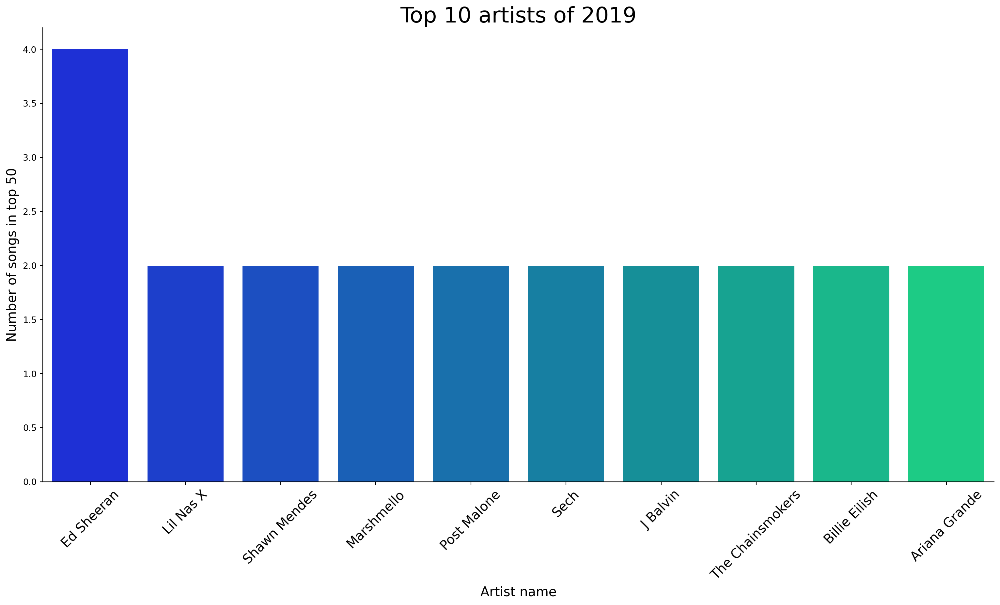
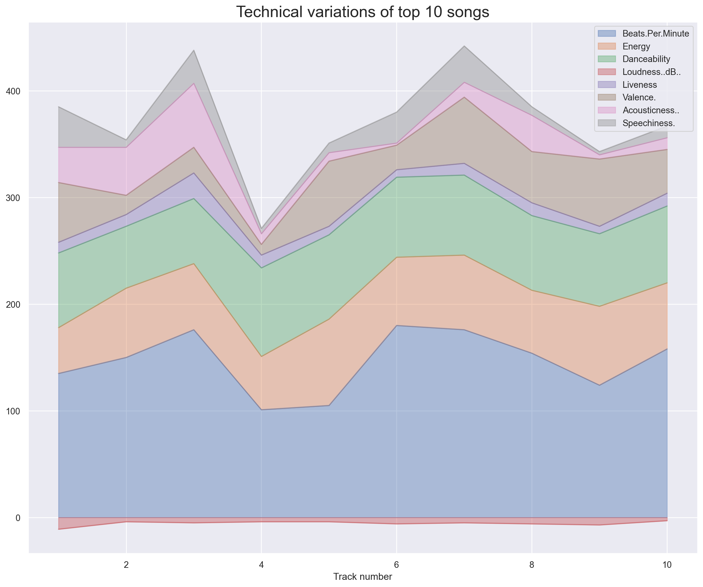
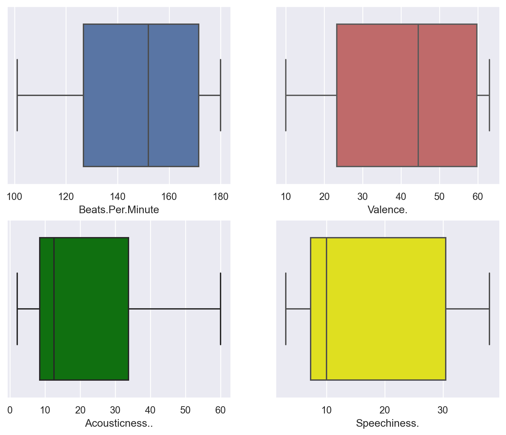
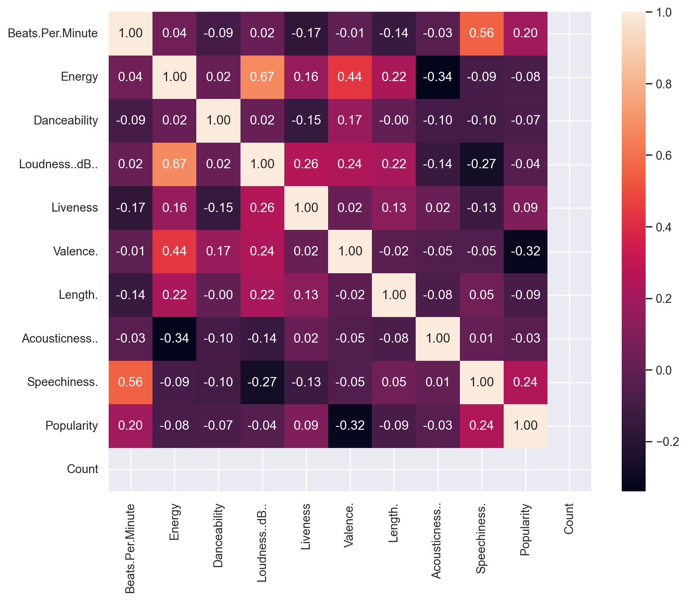

Code
import numpy as np
import pandas as pd
import seaborn as sns
import matplotlib.pyplot as plt
import plotly.express as px
import plotly.graph_objects as goArindam Baruah
July 18, 2020
As we all know, with the advent of mobile internet access for all, the world has moved from MP3 downloaded songs to streaming services. A streaming service maybe paid/unpaid subscription that lets you stream songs with a stable internet connection on your device. A paid subscription also lets you download songs on to your device to be listened to anytime even with your internet connection.
Currently, Spotify and Apple Music are the top two streaming services available. Apple Music is primarily used by iOS/MacOS users while Spotify is used by any platform using internet services. Currently, as of 2020, Spotify has about 130 million subscribers compared to Apple Music with 75 million subscribers.
Hence, we can say Spotify is the leading music service by quite a distance. These music streams use curated playlists through various ML recommendation systems that keep feeding you with interesting songs and hence, keeping you interested in their services constantly.
Through this kernel, we would like to analyse the top 50 songs published by Spotify in 2019. We will check the various genres, popularity and some other features that made the songs to famous amongst the users.
| Track.Name | Artist.Name | Genre | Beats.Per.Minute | Energy | Danceability | Loudness..dB.. | Liveness | Valence. | Length. | Acousticness.. | Speechiness. | Popularity | |
|---|---|---|---|---|---|---|---|---|---|---|---|---|---|
| 1 | Senorita | Shawn Mendes | canadian pop | 117 | 55 | 76 | -6 | 8 | 75 | 191 | 4 | 3 | 79 |
| 2 | China | Anuel AA | reggaeton flow | 105 | 81 | 79 | -4 | 8 | 61 | 302 | 8 | 9 | 92 |
| 3 | boyfriend (with Social House) | Ariana Grande | dance pop | 190 | 80 | 40 | -4 | 16 | 70 | 186 | 12 | 46 | 85 |
| 4 | Beautiful People (feat. Khalid) | Ed Sheeran | pop | 93 | 65 | 64 | -8 | 8 | 55 | 198 | 12 | 19 | 86 |
| 5 | Goodbyes (Feat. Young Thug) | Post Malone | dfw rap | 150 | 65 | 58 | -4 | 11 | 18 | 175 | 45 | 7 | 94 |
As we can see from the above graph above, we have various features such as Beats per min, genre, Energy, Danceability,Loudness, etc. to see how the songs stack up against each other. Since the data is quite detailed and clean, we will not try to wrangle with the data anymore. Hence, we shall directly head to data visualisation section.
Let us check which artists featured most frequently in the top 50 songs. We will try to obtain the top 10 most popular artists of 2019.
| Artist.Name | Count | |
|---|---|---|
| 9 | Ed Sheeran | 4 |
| 19 | Lil Nas X | 2 |
| 32 | Shawn Mendes | 2 |
| 25 | Marshmello | 2 |
| 28 | Post Malone | 2 |
| 31 | Sech | 2 |
| 10 | J Balvin | 2 |
| 34 | The Chainsmokers | 2 |
| 4 | Billie Eilish | 2 |
| 2 | Ariana Grande | 2 |
(array([0, 1, 2, 3, 4, 5, 6, 7, 8, 9]),
[Text(0, 0, 'Ed Sheeran'),
Text(1, 0, 'Lil Nas X'),
Text(2, 0, 'Shawn Mendes'),
Text(3, 0, 'Marshmello'),
Text(4, 0, 'Post Malone'),
Text(5, 0, 'Sech'),
Text(6, 0, 'J Balvin'),
Text(7, 0, 'The Chainsmokers'),
Text(8, 0, 'Billie Eilish'),
Text(9, 0, 'Ariana Grande')])
As we can see from the plot above, Ed Sheeran performed the best with 4 songs in the top 50 charts. The notable other artists with more than 1 song have been shown above. All other artists had not more than 1 song in the top 50.
Let us now check which genre of songs made it the most to the most to the top 50. This gives us a good idea of which genres are the most popular ones.
| Genre | Count | |
|---|---|---|
| 8 | dance pop | 8 |
| 15 | pop | 7 |
| 13 | latin | 5 |
| 10 | edm | 3 |
| 5 | canadian hip hop | 3 |
Let us visualise the above data into a pie plot as shown below.
Let us check the top 10 tracks of 2019 based on popularity rating.
| Track.Name | Artist.Name | Genre | Beats.Per.Minute | Energy | Danceability | Loudness..dB.. | Liveness | Valence. | Length. | Acousticness.. | Speechiness. | Popularity | Count | |
|---|---|---|---|---|---|---|---|---|---|---|---|---|---|---|
| 1 | bad guy | Billie Eilish | electropop | 135 | 43 | 70 | -11 | 10 | 56 | 194 | 33 | 38 | 95 | 1 |
| 2 | Goodbyes (Feat. Young Thug) | Post Malone | dfw rap | 150 | 65 | 58 | -4 | 11 | 18 | 175 | 45 | 7 | 94 | 1 |
| 3 | Callaita | Bad Bunny | reggaeton | 176 | 62 | 61 | -5 | 24 | 24 | 251 | 60 | 31 | 93 | 1 |
| 4 | Money In The Grave (Drake ft. Rick Ross) | Drake | canadian hip hop | 101 | 50 | 83 | -4 | 12 | 10 | 205 | 10 | 5 | 92 | 1 |
| 5 | China | Anuel AA | reggaeton flow | 105 | 81 | 79 | -4 | 8 | 61 | 302 | 8 | 9 | 92 | 1 |
| 6 | Ransom | Lil Tecca | trap music | 180 | 64 | 75 | -6 | 7 | 23 | 131 | 2 | 29 | 92 | 1 |
| 7 | Otro Trago | Sech | panamanian pop | 176 | 70 | 75 | -5 | 11 | 62 | 226 | 14 | 34 | 91 | 1 |
| 8 | Panini | Lil Nas X | country rap | 154 | 59 | 70 | -6 | 12 | 48 | 115 | 34 | 8 | 91 | 1 |
| 9 | Piece Of Your Heart | MEDUZA | pop house | 124 | 74 | 68 | -7 | 7 | 63 | 153 | 4 | 3 | 91 | 1 |
| 10 | Truth Hurts | Lizzo | escape room | 158 | 62 | 72 | -3 | 12 | 41 | 173 | 11 | 11 | 91 | 1 |
As we can see, the most popular song of 2019 is Bad Guy by Billie Eilish.
Let us check the technical aspects of the top 10 songs.
Text(0.5, 0, 'Track number')
The track number matches with the dataframe shown above for top 10 songs.
We can conclude that the :
Let us try to visualise the distribution of some of the features using plots.
sns.set(style='darkgrid')
fig2 = plt.figure(figsize=(10, 8))
ax1 = fig2.add_subplot(221)
sns.boxplot(x='Beats.Per.Minute', data=df_top_tracks, orient='v', ax=ax1)
ax2 = fig2.add_subplot(222)
sns.boxplot(x='Valence.', data=df_top_tracks, orient='v', ax=ax2, color='indianred')
ax3 = fig2.add_subplot(223)
sns.boxplot(x='Acousticness..', data=df_top_tracks, orient='v', ax=ax3, color='green')
ax4 = fig2.add_subplot(224)
sns.boxplot(x='Speechiness.', data=df_top_tracks, orient='v', ax=ax4, color='yellow')
plt.show()
These were the four features that had high variance. As a result, the inter quartile boxes are large. The horizontal lines on the boxes show the median values of each feature.
Let us check how the various features are correlated with each other using a heatmap.

From the heatmap above, following conclusions maybe drawn:
Let us check how the track lengths are changing for the tracks.
Let us check the correlation using a kdeplot.